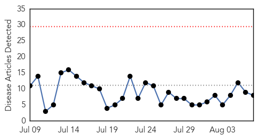
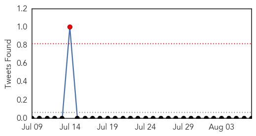
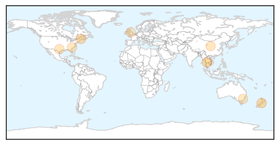
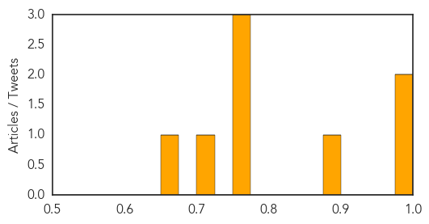
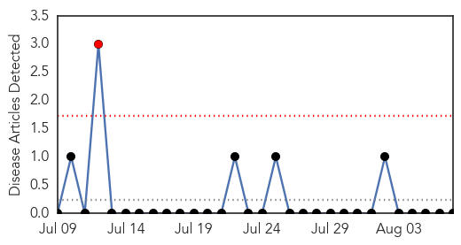

Influenza
30-Day Web Trend
0 alerts, 0 warnings

30-Day Twitter Trend
0 alerts, 0 warnings

Article Locations
Article Confidences
Top Articles:
- 0.995
- What ever happened to bird flu?
- 0.980
- Still time to get immunised against flu
- 0.889
- Maine officials prepare for possible avian flu outbreak — State — Bangor Daily News — BDN Maine
- 0.751
- August 7, 2015 Archives
- 0.751
- August 6, 2015 Archives
- 0.751
- August 6, 2015 Archives
- 0.702
- The spread of colds reduced if people used a simple internet handwashing programme
- 0.672
- Spread of colds and viruses could be halted by internet handwashing sessions
Top Tweets:
- 0.721
- The 2015-2016 flu vaccine includes updated H3N2 and influenza B virus components. More in: http://t.co/zyDw1IK5J5
Hemmorhagic Fever
30-Day Web Trend
1 alerts, 0 warnings

30-Day Twitter Trend
0 alerts, 0 warnings

Article Locations

Article Confidences

Top Articles:
-
No articles found for Aug 07, 2015
Top Tweets:
-
No tweets found for Aug 07, 2015